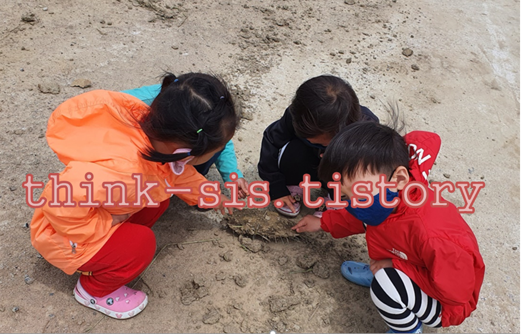

1. 영아기와 유아기 놀이의 의미
아이에게 놀이란 세상을 배우는 수단이자 삶 그 자체다. 또한 놀이야말로 아이를 아이답고 건강하게 키울 수 있는 유일한 방법이다. 아이는 놀이를 통해서 사회적 역할을 연습하고 갈등과 불안을 해소한다. 따라서 또래들과 어울려 놀면서 사회적 역할을 배우고 경험할 수 있는 환경적 여건이 아이의 정상적인 발달을 위해 필요하다. 영유아들의 모든 놀이에는 고유한 형식과 내용이 있다. 즉 ‘무궁화 꽃이 피었습니다’와 ‘술래잡기’, ‘진놀이’ 등은 각각의 놀이 방법, 놀이 재료, 놀이 규칙 등이 있어 하나의 ‘놀이’로 구별되는 것이다.

신생아가 모빌을 보는 것에서부터 딸랑이를 가지고 흔드는 것, 블록으로 성을 쌓는 것까지 모든 놀이에 기초적인 인지 능력과 연관성이 있다. 이러한 능력들은 반복적인 놀이를 통해 향상된다. 이와 같이 영유아들의 놀이에는 규칙이나 방법이 따로 없으므로 반복적 경험을 하는 과정이다. 아이들은 놀이를 통하여 마음껏 자신의 상상력을 키우고 표현하면서 창의성 훈련의 계기를 마련하는 것이다.
2. 영아기와 유아기 놀이의 중요성
아이는 놀이를 통해서 내적 충동, 정서적 갈등과 긴장을 해소하며 더욱 풍부한 감정을 발달시킬 수 있다. 놀이는 신체적 성장이 향상되어 영유아의 능숙한 운동 기술의 발달과 신체 균형이 이루어질 수 있다. 놀이는 지적 발달을 돕는다. 놀이를 통해 영유아는 놀잇감의 사용으로 사물에 대한 개념이 형성되어 집중력, 탐구력, 문제해결력, 이해력, 사고력, 추리력, 언어 등을 발달시키며 많은 생각을 하게 된다.
놀이는 인간 생활의 기본형태를 익히게 되고 타인과의 관계에 대해 학습하게 되며 사회관계의 형성과 문제에 대한 적응, 문제 해결 방법을 배우게 되어 아이의 사회성 발달에 도움을 준다. 이러한 놀이의 의의를 통해 볼 때 영유아의 놀이는 체계적이고 조화로운 인간으로 성장할 수 있는 통로 역할을 하며 영향을 미친다.
3. 영아기와 유아기 놀이와 인지발달의 관계
아이는 놀이를 통해 또래와 상호작용하며 자신의 상징물을 표현한다. 아이는 놀이를 지속시키기 위해 언어를 사용한다. 놀이 속에서 새로운 의사표현방법을 발견해 낸다. 아이는 또래와 같이 놀이를 하면서 자신이 누구인지, 자신들이 어떤 행동을 하고 있는지, 무엇을 표상하고 있는지, 자신들이 있는 곳이 어딘지에 관련해 의사소통할 필요성을 느낀다.
아이는 놀이상황에서 이해를 돕기 위하여 자신의 의견과 감정을 언어로 표현하여 의사소통을 시도한다. 놀이 하나 하나가 각각의 규칙을 가지고 독립된 영역을 이루며 지역적으로 행해지고 완성되었기에 나타나는 현상이다. 이런 이유에서 놀이를 하나의 문화형태라 이름 할 수 있는 것이다.
놀이의 규칙은 살아가면서 그 사람이 속해 있는 사회에서의 규칙을 이해하고 이를 지키게 하는 품성으로 확대된다. 아이는 놀이집단 형성을 통하여 놀이형태를 변화시키면서 놀이를 계획하고 유지하며 마침내 놀이를 끝내는 과정을 통하여 서로 협상을 한다.
이 시기는 타인과 놀이를 하면서 놀이각본을 함께 공유하게 되고 자신의 역할에 따라 실행하는 과정에서 언어적인 각본의 이해가 향상되고 자신의 역할에 대한 또래의 해석을 유추하고 놀이를 발달시키는 능력이 발달된다. 즉 영유아들은 놀이상황 안에서 다른 활동보다 더 현란한 단어의 선택과 묘사를 사용하고 더욱더 많은 어휘를 자연스럽게 표현한다고 할 수 있다. 이는 아이가 놀이를 통해 인지능력과 언어능력이 함께 발달시켜감을 의미한다. 따라서 놀이의 여러 요소가 교육 과정에 일관되게 관철되고 진행될 때 빛을 낼 수 있는 것이다.
참고문헌
김수영 외(2002). 유아놀이의 이론과 실제. 양서원.
전성연(2001). 교수-학습의 이론적 탐색. 원미사.
심우엽(2005). 놀이와 아동발달 및 교육. 초등교육연구.
이숙재(2002). 개정 유아를 위한 놀이의 이론과 실제. 창지사
2021.10.31 - [분류 전체보기] - 영유아기 놀이와 인지발달에 미치는 영향-뇌의 가소성, 학습능력
영유아기 놀이와 인지발달에 미치는 영향-뇌의 가소성, 학습능력
1. 놀이가 영아의 인지발달에 미치는 영향 1) 영아의 뇌는 가소성이 매우 크다. 긍정적인 영향은 뇌에 자극을 주고 부정적인 영향은 뇌의 활동을 저하시킨다고 한다. 영아들의 발달에 영향을 주
think-sis.tistory.com